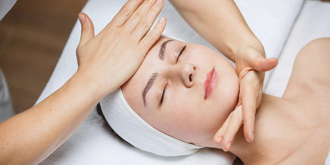

Буккальный лимфодренажный массаж лица
Лимфодренажный массаж лица – это методика воздействия на лимфатическую жидкость, которое стимулирует отток крови и улучшает обменные процессы. Неинвазивная безболезненная процедура лимфодренажа оказывает комплексное воздействие и помогает решить как медицинские, так и эстетические проблемы.
Услуга лимфодренажного массажа направлена на улучшение состояния кожного рельефа. Стимулирование обменных и регенерационных процессов в том числе оказывает эффект омоложения, как в принципе и все другие типы массажа лица от морщин и складок.
Выполняется процедура лимфодренажного массажа лица у косметолога без использования сильнодействующих средств. Независимо от выбранной техники и инструмента воздействия на кожу применяется обычное средство для массажа, направленное на усиление эффекта скольжения. Как правило, выполняется ручной лимфодренажный массаж, основным приемом которого являются пульсирующие точечные надавливания, чередующиеся с поглаживаниями

Длится процедура около часа, а эффект заметен уже после 1-2 сеансов:
- Происходит стимуляция обменных процессов в коже, повышается кровообращение.
- Кожа насыщается питательными элементами и происходит регуляция водно-солевого баланса.
- Повышается эластичность кожи, подтягивается овал лица – его контур становится более подчеркнутым и красивым.
- Устраняются мешки под глазами и отечность.
- Сглаживаются мимические морщины.
Выполняется массаж по ходу оттока лимфы в течение 60 минут. Курс подбирается индивидуально и включает 5-10 процедур.x
Показания к процедуре
- отечность и пастозность лица;
- наличие синяков и мешков под глазами;
- мимические морщины, заломы и складки;
- дряблость кожи, птоз.
Буккальный массаж лица
Массаж нижней части лица. Мышцы лица прорабатываются снаружи и изнутри (в полости рта), всё это делается с применением силы. Таким образом мастер может максимально тщательно проработать круговую, жевательную, скуловые мышцы.
Это единственная методика, в которой должна быть боль.
Техника разработана косметологом из Франции Жоэль Сиокко
Процедура проходит лёжа, пациент открывает рот и мастер, в стерильных перчатках, начинает разминать мышцы щек, губ и подбородка.
Количество процедур подбираются индивидуально. В среднем понадобится около 8 процедур, примерно по 15 минут каждая.
Эффект от буккального массажа
- По ощущениям похоже на тренировку в тренажерном зале, мы чувствуем мышечную боль. Однозначно мышцы лица нуждаются в тренировке, как и все мышцы в нашем теле. И такой массаж хороший и довольно легкий, ленивый способ проработать мышцы
- Контур лица становится чётче
- Лицо становится гладким, подтянутым, кожа приобретает здоровый вид
- Линия подбородка, скулы становятся лучше очерченными
- Мелкие морщинки становятся почти незаметными